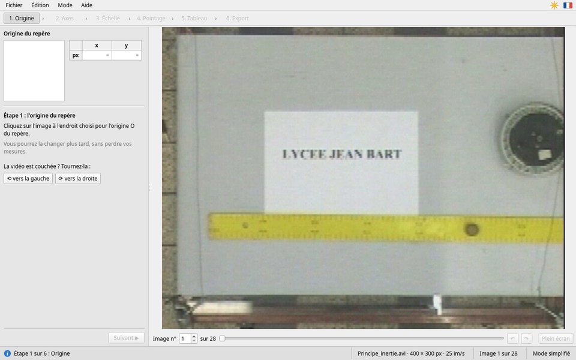
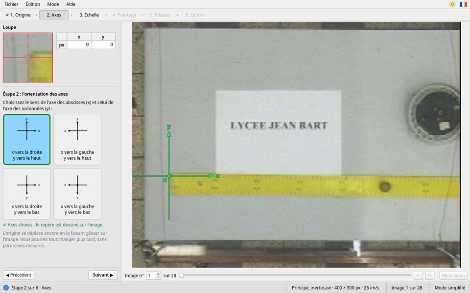
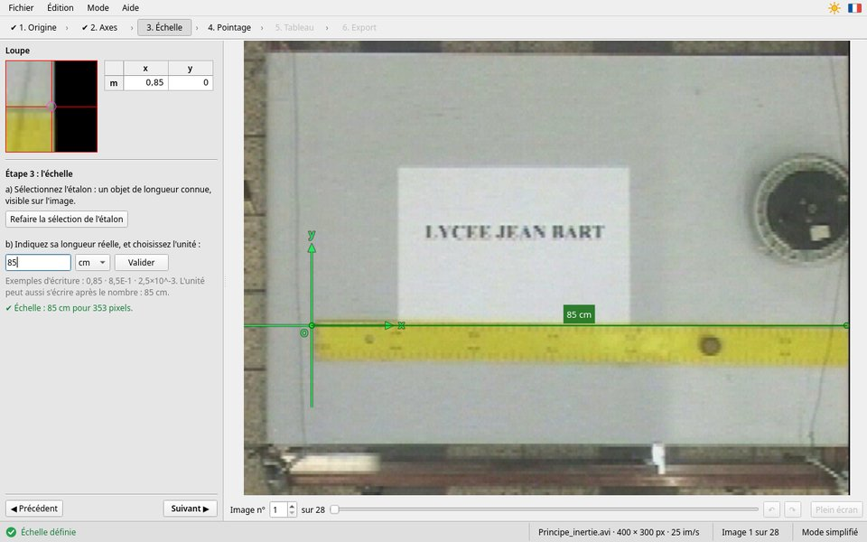
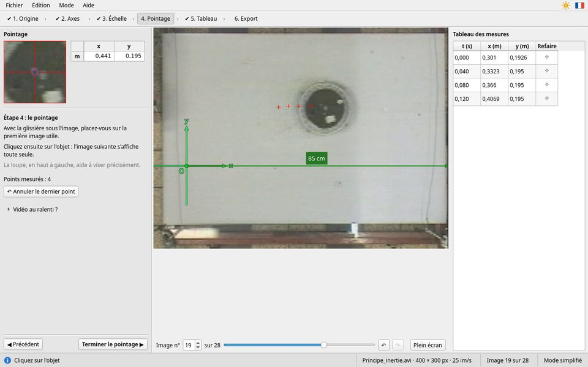
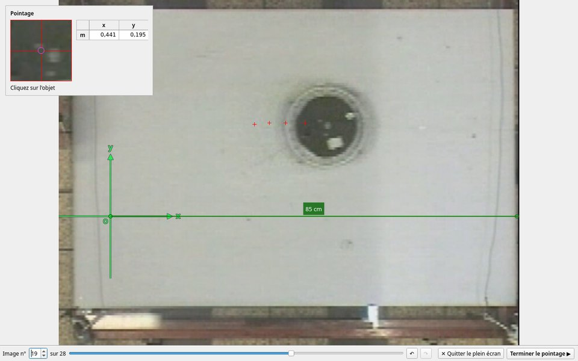
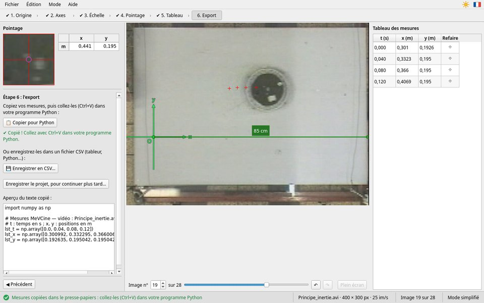

Le mode simplifié, pas à pas
Six étapes guidées, pour un seul objet
À gauche, en haut, la loupe et les coordonnées du point visé ; en dessous, la consigne de l'étape ; tout en bas, ◀ Précédent et Suivant ▶. Au centre, l'image de la vidéo, et sous l'image le choix de l'image. À droite, à partir de l'étape 4, le tableau des mesures. La fenêtre entière est décrite sur la page Présentation.
Le bandeau du haut montre les six étapes : une coche ✔ marque celles qui sont faites. On n'avance que si l'étape est faite (Suivant ▶ reste grisé sinon). On peut revenir aux étapes 1 à 3 même après le pointage : les mesures sont gardées, et recalculées.
Étape 1 : l'origine du repère

Principe_inertie.avi : un palet glisse sur une table ; la règle
jaune mesure 85 cm.Cliquez sur l'image à l'endroit choisi pour l'origine O : souvent la position de départ de l'objet, ou un point facile à repérer (le bout d'une règle, le sol…). L'origine apparaît en vert. Pour la déplacer, cliquez ailleurs, ou faites-la glisser : bouton enfoncé, la souris l'emmène.
La vidéo est couchée ? Les boutons ⟲ vers la gauche et ⟳ vers la droite la tournent d'un quart de tour (seulement avant l'échelle et le pointage).
Profitez-en pour parcourir la vidéo avec la glissière sous l'image : repérez où le mouvement commence et où il finit.
Étape 2 : l'orientation des axes

Choisissez le sens de l'axe des abscisses x (vers la droite ou vers la gauche) et celui de l'axe des ordonnées y (vers le haut ou vers le bas). Le repère est aussitôt dessiné sur l'image. Pour une chute, on prend souvent y vers le bas ; pour un lancer, y vers le haut : c'est à vous de décider, d'après ce que vous voulez calculer ensuite.
À cette étape aussi, l'origine se déplace en la faisant glisser : approchez la souris du point vert (le curseur devient une main), puis glissez.
Étape 3 : l'échelle

- Cliquez sur Sélectionner l'étalon. Sur l'image, cliquez sur une extrémité d'un objet de longueur connue (une règle, une porte, une distance mesurée), puis sur l'autre extrémité. Vous pouvez aussi glisser d'une extrémité à l'autre. Clic droit ou Échap : annuler.
- Tapez sa longueur réelle, choisissez l'unité dans la liste
(
mm,cmoum), puis Valider (ou Entrée). On peut aussi écrire l'unité après le nombre :85 cm.
« ✔ Échelle : 85 cm pour 353 pixels. » confirme ; l'étalon reste dessiné sur l'image, avec sa longueur. Les positions sont ensuite données en mètre, quelle que soit l'unité de l'étalon. Comment choisir un bon étalon, et toutes les écritures permises : L'échelle.
Étape 4 : le pointage

- Avec la glissière (ou les flèches ← →), placez-vous sur la première image utile : celle où le mouvement commence. Ce sera la date t = 0.
- Cliquez sur l'objet. L'image suivante s'affiche toute seule, et le tableau gagne une ligne. Recommencez, image après image.
- Regardez la loupe, en haut à gauche, au moment de cliquer, et visez toujours le même point de l'objet : son centre, ou son bord avant.
- ↶ Annuler le dernier point (Ctrl+Z) efface le dernier point et revient sur son image ; ↷ (Ctrl+Y) le rétablit.
- Inutile de pointer toute la vidéo : arrêtez-vous quand le mouvement est fini. En revanche, on ne saute pas d'image.
- Vidéo au ralenti ? Ouvrez cette rubrique si la vidéo a été filmée au ralenti, et indiquez la cadence de prise de vue (par exemple 240 images par seconde). Voir Au ralenti.
- « Cadence variable : les dates réelles des images sont utilisées. » : la vidéo vient d'un téléphone dont les images ne sont pas régulièrement espacées. Rien à faire : MeVCine prend la vraie date de chaque image. Voir Cadence variable.
Quand c'est fini : Terminer le pointage ▶.
Pointer en plein écran

Plein écran, sous l'image (F11) : l'image occupe tout l'écran, et les points sont plus faciles à viser. La loupe, les coordonnées et la consigne restent affichées dans un cadre, en haut de l'image ; quand la souris s'en approche, il passe de l'autre côté, pour ne jamais cacher l'objet. On pointe comme dans la fenêtre : un clic sur l'objet, et l'image suivante s'affiche.
- En bas : le choix de l'image, ↶ ↷ pour annuler ou rétablir le dernier point.
- ✕ Quitter le plein écran (Échap ou F11) revient à la fenêtre ; le pointage continue.
- Terminer le pointage ▶ revient à la fenêtre, à l'étape 5.
Étape 5 : le tableau des mesures
Pour chaque image pointée : la date t en seconde, et les coordonnées x et
y en mètre, dans votre repère. La première image pointée est à t = 0 ; avec une vidéo à
25 images par seconde, les dates avancent de 0,040 s en 0,040 s (sauf si la cadence est variable).
Une mesure est fausse ? Cliquez sur ⌖ dans sa ligne : son image s'affiche, le point à refaire est entouré d'orange ; cliquez sur l'objet. MeVCine revient ensuite où vous en étiez. Annuler (Échap) renonce.
◀ Reprendre le pointage revient à l'étape 4. Revenir aux étapes 1 à 3 (déplacer l'origine, changer les axes, refaire l'échelle) recalcule toutes les mesures, sans rien perdre : essayez, et regardez comment les coordonnées changent.
Étape 6 : l'export

- 📋 Copier pour Python : les mesures vont dans le presse-papiers, sous forme de
trois tableaux
lst_t,lst_x,lst_y. Collez-les avec Ctrl+V dans votre programme Python ou votre notebook. « ✔ Copié ! » confirme. - 💾 Enregistrer en CSV… : un fichier pour un tableur ou un programme.
- Enregistrer le projet, pour continuer plus tard… : un fichier
.mevcinequi garde tout.
Comment utiliser ces fichiers : Exporter les mesures. Un exemple complet, jusqu'au programme Python : Un TP pas à pas.
Avant de partir, copiez ou enregistrez vos mesures. Si vous l'oubliez, MeVCine vous le rappelle ; et le travail en cours est de toute façon sauvegardé automatiquement.